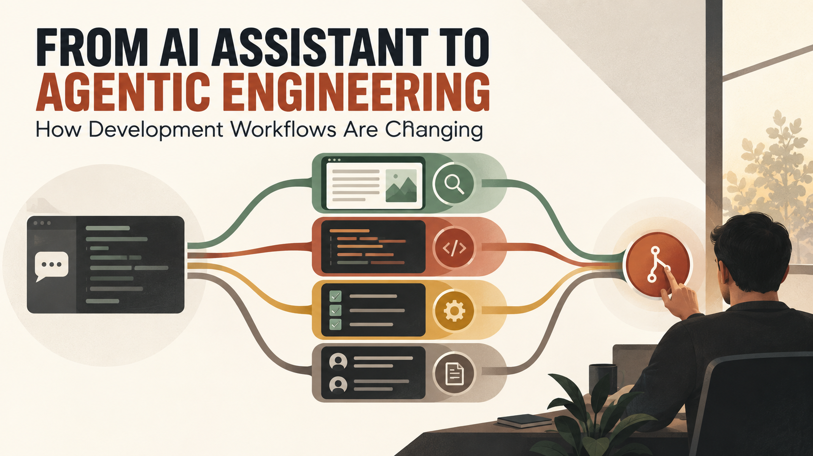

What changes when an AI tool stops answering questions and starts completing a sequence of engineering tasks?
That is the shift from an assistant to an agentic workflow. The assistant waits for a prompt and produces a response. The agent receives an objective, gathers context, uses tools, performs steps and returns work for review.
The distinction matters because it changes what developers supervise. Instead of checking one suggestion, they may be reviewing a chain that touched files, ran commands, created tests and prepared a pull request.
AI-assisted development is not one fixed capability. It can be understood as a spectrum.
At the first level, autocomplete predicts the next line or block. The developer remains in continuous control.
At the second level, a conversational assistant explains code, drafts a function or proposes a fix. The developer selects and applies the result.
At the third level, a task agent can inspect a repository, edit several files, run tests and iterate after failures. The developer defines the task and reviews a larger unit of work.
At the fourth level, coordinated agents or workstreams divide research, implementation, testing and review. The human becomes the person who defines boundaries, resolves ambiguity and decides what is safe to merge.
Teams can benefit at any level. More autonomy is not automatically better.
Agents perform better when the repository explains itself. Clear setup instructions, repeatable commands, typed interfaces, useful tests and small modules reduce ambiguity for humans and automated tools alike.
A strong task description includes the problem, acceptance criteria, affected users, constraints, examples and what must not change. It also identifies the source of truth for product behaviour.
This is not “prompt engineering” as a separate magic skill. It is good engineering communication made executable.
A capable agent can search a codebase, trace a request path, compare related components and inspect tests before editing anything. That is valuable because many defects are caused by changing the first visible file without understanding the system.
However, research results still need judgment. The most frequently used pattern in a repository may be legacy code. A passing test may encode outdated behaviour. Documentation may not match production.
Agents should surface their assumptions and cite the files, tests or documentation that informed a decision. The reviewer should be able to follow the reasoning without reconstructing the entire run.
When several automated tasks edit the same codebase, collision becomes a practical problem. Separate branches or worktrees can isolate changes. Clear ownership of files and interfaces reduces merge conflicts.
Parallelism works best for tasks that are genuinely separable: one workstream researches an API, another adds unit tests and another prepares documentation. It works poorly when several agents make overlapping architectural decisions without coordination.
The goal is not the maximum number of agents. It is the shortest trustworthy path to a coherent change.
Tests give an agent immediate feedback, but only for behaviour the tests cover. A weak test suite can make a wrong implementation appear complete.
Useful agentic workflows combine unit tests, integration tests, type checks, linting, security scanning and targeted manual verification. The task should define which checks must pass and which areas require human review.
Agents can also propose tests before implementation. That can expose ambiguous requirements early. Reviewers should watch for tests that simply mirror the generated code instead of asserting business behaviour.
As generation becomes faster, reviewing every line with equal attention becomes unrealistic. Good workflows create review layers.
First, automated checks reject obvious failures. Second, the agent provides a concise change summary, assumptions, test evidence and known limitations. Third, a human reviews architecture, security, data changes and customer impact. High-risk changes receive deeper or specialist review.
The final decision should be based on evidence, not the confidence of the generated explanation.
An engineering agent can be productive without broad production permissions. Give it repository access, isolated development environments, test data and scoped tools. Protect main branches and deployment credentials.
If an agent participates in deployment, separate preparation from authorization. It may build an artifact and present a plan, while a controlled system or human approves the release. Record the actions and preserve rollback capability.
Agentic speed should not bypass change management. It should make change management better informed.
Lines of generated code and number of completed tasks are easy to count but weak indicators of value. More meaningful measures include cycle time, escaped defects, review time, rollback rate, customer impact, reliability and developer time recovered.
Teams should also watch for hidden costs: larger pull requests, duplicated abstractions, dependency growth, flaky tests and time spent correcting plausible but incorrect output.
The best workflow is not the one that produces the most code. It is the one that delivers useful changes with acceptable risk and less wasted effort.
Developers still need language and framework knowledge. They also need stronger skills in task decomposition, system design, test strategy, threat modeling, observability and review.
Writing precise acceptance criteria becomes more valuable. So does recognizing when a task is too ambiguous for autonomous execution. Engineers who understand the business domain can guide agents toward useful work and detect when the output is locally correct but globally wrong.
Agentic engineering is not a handover of responsibility. It is a new way to organize execution.
The human defines the goal, constraints and acceptable risk. Automated tools explore and perform bounded work. Tests and policies provide feedback. Reviewers decide whether the evidence is sufficient. Production systems monitor the outcome.
Used this way, agents can remove friction without removing accountability. That is a more realistic and more valuable future than software that supposedly builds itself.
I design modern development and automation workflows around clear requirements, reliable APIs, maintainable code and responsible AI use. To discuss a product or engineering engagement, email hello@massoda.me or contact me on WhatsApp.